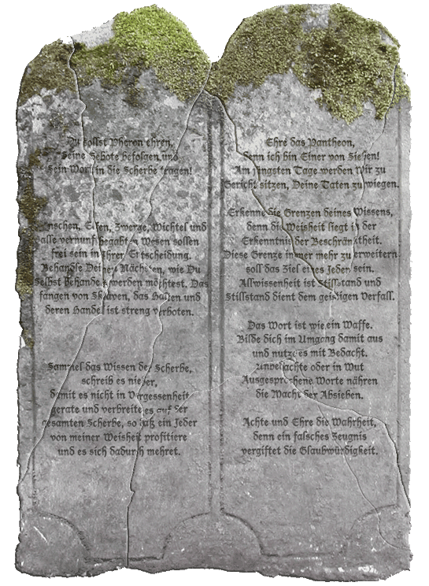

|

|
Das schwarze Brett
|
|
| Übersicht,
Anschläge und Stammtisch (RPG) |
|
Vision (2  ) )
|
| Meretán Exitus (RIP) |
hmm... gerade kam Pherons Kraft zu mir und auch bei einigen anderen die ich kenne...
Sir Meretán Exitus,
Ehemann der reizenden Sâkura Tatzúmi
Zur 22. Stunde am 46.Blumenmond im Jahre 426 |
02.10.06 23:18
|
|
Galaton Dragus
  |
Interessant...bei mir ist es Pherons Kraft, eine magische Waffe deren Bedeutung ich noch nicht enträtseln konnte
*verwirrt guckt gleichzeitig seiner Leibgarde ein Zeichen zum aufsatteln und bewaffnen gibt*
Fürst Galaton Dragus,
Vorsteher von Bethana
Zur 22. Stunde am 46.Blumenmond im Jahre 426 |
02.10.06 23:19
|
|
| Jack R. Calico (RIP) |
Pheron hat anscheinend jedem Unterstützer von Lager Mitte einen magischen Gegenstand zukommen lassen, selbst in meinem Beutel fand ich diese machtvolle Waffe...
Freiherr Jack R. Calico,
Vorsteher von Beldhar
Zur 22. Stunde am 46.Blumenmond im Jahre 426 |
02.10.06 23:20
|
|
Zorra
  |
Ich wuerde auch liebend gern mehr ueber diese Robe erfahren.
Gezeichnet
Glin
Pfalzgräfin Zorra,
Vorsteherin von Feuer des Rubins,
Anführerin der glorreichen Nation "Steppenreiter",
Verlobte des ehrenwerten Mordow
Zur 22. Stunde am 46.Blumenmond im Jahre 426 |
02.10.06 23:24
|
|
| Sinuel von Dahén (RIP) |
Dem Anschein nach wurden die Diener Murads wohl endgültig geschlagen.
Es war mir eine Ehre beim finalen Schlag dabei gewesen zu sein.
Sinuel von Dahén,
Kardinälin im Dienste des einzig wahren Glaubens an Pheron
Zur 22. Stunde am 46.Blumenmond im Jahre 426 |
02.10.06 23:24
|
|
Golgar
  |
Nun auch ich war dabei. Der Letzte Fürst starb durch mein Schwert. Und die Unterstützung aller.
Nun beim durchwühlen meiner Taschen fand ich neben einem Geschenke Pherons, auch dies...

Golgar,
Hohepriester im Dienste des einzig wahren Glaubens an Urvan,
Legionär Urvans
Zur 24. Stunde am 46.Blumenmond im Jahre 426 |
02.10.06 23:43
|
|
| Angelus von Dolor (RIP) |
Ach ja, immer diese kleinen Krieger. Rennen so eilig aus Vorfreude über ihren Fund zum Anschlag das sie diesen spontan verlieren.
Zum Glück lief ich aus Zufall hinter ihm und habe das gute Stück gefunden.
Somit nun das gute Stück für Alle:

Angelus von Dolor,
Hofnarr und Scherzkeks
Zur 1. Stunde am 47.Blumenmond im Jahre 426 |
02.10.06 23:55
|
|
| Zokan Noteel (RIP) |
Tja vielleicht sollte der Pheronkonvent seine Einstellung mir gegenüber mal überdenken denn auch ich habe diese Robe bekommen und ich glaube nicht das ich diese bekommen hätte wenn Pheron nicht hinter meinen Handlungen stehen würde.
Zokan Noteel,
Weltlicher Prophet Pherons
Zur 1. Stunde am 47.Blumenmond im Jahre 426 |
02.10.06 23:56
|
|
| Scarabas erthá Gôvannas (RIP) |
Auch ich fand eine solche Robe in meinem Rucksack und kann euch kundtun, dass dies eine Sonderrüstung für Magier der Stufe 3 ist.
Normaler Weise können Magier nur Straßenkleidung tragen, aber diese Robe ist eine Sonderanfertigung und mit dem Segen Pherons versehen. Dadurch nimmt der Magier, welcher sie angelegt hat, je Treffer 4 Punkte weniger Schaden.
Habe dies bereits in einem Kampfe getestet.
Ich hoffe, ich konnte ein wenig zur Klärung beitragen.
Scarabas erthá Gôvannas,
Priester im Dienste des einzig wahren Glaubens an Pheron
Zur 1. Stunde am 47.Blumenmond im Jahre 426 |
02.10.06 23:59
|
|
| Michéle (RIP) |
Damit hat sich wohl meine Vermutung nun auch bestätigt das es sich um eine Gebotstafel handelt
*freut sich das sie recht hatte und nun alles gut werden kann*
Lady Michéle
Zur 1. Stunde am 47.Blumenmond im Jahre 426 |
03.10.06 0:02
|
|
| Obsidia Schwarzfeder (RIP) |
Wie es aussieht, erhielt jeder der sich an den Kämpfen gegen die Diener Muradjanians beteiligte Pherons Kraft und / oder Pherons Schutz. Die Schergen Muradjanians sind besiegt und die Tafel, von der vorher nur Fragmente aufgetaucht waren - mit einem verfälschten Bruchstück - ist nun vollständig und allen Scherbenbewohnern zugänglich.
Es war mir eine Ehre, bei den Kämpfen dabeisein zu können und ich bedanke mich für die gute Zusammenarbeit. Mögen wir möglichen zukünftigen Herausforderungen ebenso einig entgegentreten.
Eines allerdings beschäftigt mich noch: In der Handwerkerschule zu Lager Mitte ist ein Unausgebildeter Arbeiter, der sich zwar ansprechen läßt, aber auf nicht viel mehr als auf eine Begrüßung reagiert. Ob er etwas mit der ganzen Angelegenheit zu tun hat, entzieht sich meiner Kenntnis, da er mir einfach den Rücken zugewendet hat, als ich ihn etwas fragen wollte.
Obsidia Schwarzfeder,
Kardinälin im Dienste des einzig wahren Glaubens an Bendur
Zur 1. Stunde am 47.Blumenmond im Jahre 426 |
03.10.06 0:06
|
|
| Sander MacYorlegh (RIP) |
Ich habe mich nicht an den Kämpfen beteidigt, jedoch glaubt eine meiner Magierinnen an Pheron und bei ihr ist auch eine Robe aufgetaucht :)
Freiherr Sander MacYorlegh,
Vorsteher von Tura Clementiae,
Botschafter der Bruderschaft des weißen Adlers
Zur 2. Stunde am 47.Blumenmond im Jahre 426 |
03.10.06 0:13
|
|
| Bastiron Laval (RIP) |
Auch meine Magierin glaubt an Pheron. Sie hat jedoch nichts derartiges gefunden.
((gut sie war auch gestern abend im Tempel. Vielleicht liegt es daran. Wenn das der Fall ist, ärger ich mich erstmal kräftig))
Markgraf SpitzohrBasti,
Anführer der glorreichen Nation "Die Gefährten",
Verlobter der reizenden Lyrielle Seestern
Zur 3. Stunde am 47.Blumenmond im Jahre 426 |
03.10.06 0:23
|
|
Tilion
  |
Eine meiner Kriegerinnen bekam diese Waffen.
Ich werde sie in Ehren halten, auch wenn ich die Magie weiterhin ablehne.
Die Götter sind uns wohlgesonnen in diesen Tagen.
Freiherr Tilion,
Vorsteher von Avarannon
Zur 3. Stunde am 47.Blumenmond im Jahre 426 |
03.10.06 0:26
|
|
| Syliell Sonnentau (RIP) |
Die Aussage des Freiherren kann ich ebenfalls nicht bestätigen, die Pheroni in den Reihen meiner Begleiter erhielten ebenfalls weder den Schutz Pherons noch seine Stärke.
Ich denke mit beidem werden nur die offensiven Gegner der alten Vettel belohnt.
Freifrau Syliell,
Vorsteherin von Mallorn,
Verlobte des ehrenwerten Alexius
Zur 3. Stunde am 47.Blumenmond im Jahre 426 |
03.10.06 0:29
|
|
| Dracon Darknight (RIP) |
Auch ich fand heute morgen eine Robe Pherons und einen dazugehörigen Stab vor.
Ich danke dir für dieses Geschenk Gott der Weisheit.
Meine Leute werden diese Artefakte gewiss in Euren Sinne einsetzen, dafür werde ich Sorge tragen.
Sir Malthur Darknight,
Kardinal im Dienste des einzig wahren Glaubens an Urvan,
Ehemann der reizenden Selina Darknight
Zur 17. Stunde am 48.Blumenmond im Jahre 426 |
03.10.06 9:24
|
|
| Urvantreu Asleifson (RIP) |
Auch ich empfing Pherons Kraft, obwohl alle meine Recken Urvan als ihren Schutzherren wählten.
Demnach muss es eine Gabe an die Kämpfer von Lager Mitte sein - möglicherweise auch, um noch kommenden Gefahren, die nur ein Gott wie der weise Pheron erkennen kann, entgegen treten zu können.
Wir sollten also auf unsere Gaben acht geben, denn möglicherweise sind nächste, noch mächtigere Feinde nur durch diese magischen Waffen zu besiegen...
Urvantreu Asleifson,
Kardinal im Dienste des einzig wahren Glaubens an Urvan,
Marshall des Heeres der Stille
Zur 20. Stunde am 48.Blumenmond im Jahre 426 |
03.10.06 10:00
|
|
| Ashtar Udaron (RIP) |
Ich empfing Pherons Schutz, jedoch kämpfte ich lediglich gegen wenige Schergen Muradjanians, welche Unruhe auf Neldoreth stiften wollten und machte ihnen den Garaus. In Lager Mitte war ich keine helfende Hand und diene in meinem Glauben nicht Pheron.
Sir Wondar Birkenhain,
Vorsteher von wàhi ahumàra,
Straßenbaumeister der Dunedain,
Ehemann des ehrenwerten Kobifix
Zur 23. Stunde am 48.Blumenmond im Jahre 426 |
03.10.06 10:43
|
|
| Anastasius (RIP) |
Selbst am südlichsten Punkt der Scherbe hat Pherons Gabe meinen 2ten Krieger erreicht.
Recht erstaunt waren wir doch , das er und nicht sein Pheron gefaelliger Freund der Magier sie erhiet, was uns nicht abhielt sie ihm zu uebergeben.
Doch noch sind die Schergen der Daemonen nicht besiegt, immer noch erreichen uns hier am suedlichsten Ziepfel Botschaften von einfallenden Untoten.
So danken wir Pheron fuer seine Unterstuetzung und nutzen diese im Kampf gegen die Absieben.
Morod zum Dank
Anastasius,
Hohepriester im Dienste des einzig wahren Glaubens an Urvan,
Legionär Urvans,
Erster Ritter
Zur 23. Stunde am 48.Blumenmond im Jahre 426 |
03.10.06 10:43
|
|
Klaus Störtebeker
  |
Sehr erfreulich, das Blendwerk wurde offenbar nun wirklich durchschaut, die wahren Bruchstücke der Steintafel mit Pherons Wort wieder zusammengefügt, und der Gott der Weisheit & des Wissens scheint damit derart zufrieden gewesen zu sein, daß er nicht nur die kämpfenden Helfer, gleich welcher Konfession, mit seinen Gaben bedacht wurden. Möge es nicht das letzte Mal gewesene sein, daß die Anhänger der Lichtsieben an einem Strang ziehen!
Sir Klaus Störtebeker,
Kapitän des Roten Teufel und Mitglied im Hohen Rat
Zur 17. Stunde am 49.Blumenmond im Jahre 426 |
03.10.06 15:01
|
|
| Yverddon (RIP) |
Ich bin erschrocken darüber, wie sehr diese Roben und Waffen in den Vordergrund gestellt werden, wo uns doch offensichtlich etwas sehr viel Wertvolleres gegeben wurde.
Diese Gebotstafeln müssten natürlich untersucht werden, ob es sich dabei um Scharlatanerie handeln könnte, aber wenn sie echt sind, wovon ich aufgrund der Umstände ihres Auffindens ausgehe, dann ist dies ein außerordentlicher Schatz.
Diese Steintafeln sind auf jeden Fall älter als alle uns bekannten schriftlichen Aufzeichnungen zu den Geboten Pherons. Wenn dies die Urgebote sind, ist das sowohl im Hinblick auf die theologischen Aspekte als auch historisch gesehen eine Sensation.
Yverddon,
Hohepriester im Dienste des einzig wahren Glaubens an Pheron,
Drachentöter von Caligo
Zur 21. Stunde am 61.Blumenmond im Jahre 426 |
06.10.06 10:46
|
|
| Damona Leyniél von Dahén (RIP) |
Da gebe ich Euch vollkommen Recht...
Diese Tafel sollte sorgfältig analysiert werden...aber dann sicher im Museum zur Scherbengeschichte verwahrt werden.
Damona,
Kardinälin im Dienste des einzig wahren Glaubens an Tura
Zur 3. Stunde am 63.Blumenmond im Jahre 426 |
06.10.06 17:52
|
|
Golgar
|
<i>Ein Halbling im Kriegergewand humpelt zum Anschlagbrett, auf einen größeren Stock gestützt.
Er reicht einen Zettel einem der Zwerge, welchen ihn begleiten. Dieser heftet den Zettel am Brett fest an.</i>
Gar Schreckliches ist geschehen! Die Tafel Pherons wurde gestohlen!
Nur wenig kann ich berichten, da die Erinnerungen daran getrübt sind.
Ich weis nur Folgendes.
Eine Taube erreichte mich, dass auf LoH sich Untote Muradjanians herumtreiben würden. Meine Hilfe und mein Schwert wären von Nöten.
Meine Mannen und Ich zögerten nicht und machten uns umgehend auf den Weg zu den genannten Koordinaten.
Auf dem Wege dahin wurden wir von gar grausigen Dämonen angegriffen. Der Kampf war kurz und schmerzvoll. Streiter um Streiter fielen Ihnen zum Opfer. Auch wenn ich diese Wesen als "Stärker" vermutet hätte, waren meine Mitstreiter so schnell besiegt, wie ich es selten erlebt habe, in den so vielen Kämpfen der letzten Jahre.
Das wir Leben, kann ich nicht verstehen. Ich hoffe das Ich in Gebeten zu Urvan, Antworten dazu erhalten werde.
Als wir wieder zu uns kamen, waren unsere Pferde geschlachtet und unsere Taschen geleert.
Bei der Überprüfung der Habseeligkeiten, mussten wir das Fehlen der Steintafel feststellen.
Leider habe ich nichts als Beweis vorzulegen, ausser mein Wort und meine schartige Klinge, welche ich einem der Dämonen in den Leib rammen konnte, bevor mich das Bewusstsein verlies.
Der eine oder andere wird sich nun fragen: "Wieso ich dieses edle Gut bei mir hatte."
Nundenn, kurz nachdem ich durch Pheron damit beschenkt wurde, ward auch durch dieses Brette, die Allgemeinheit informiert worden. Ob des Wunders, welches den Lichtgläubigen zuteil wurde.
Recht kurze Zeit darauf, bekam ich Tauben durch einen Vertreter des Pheronkonventes, das der Konvent diese Tafel gerne erhalten würde. Man sich aber "zu gegebener Zeit" bei mir erneut melden würde, um die Übergabe zu ermöglichen.
Seitdem herrscht Ruhe, was den Kontakt mit dem Pheronkonvent betrifft.
Etliche Monde habe ich, in meiner Heimat diese Tafel beschützt. Doch aber wissend, das wenn ich zu meinen Legionärstätigkeiten gerufen werde, ich mitunter Tage von daheim entfernt sein bin. In diesem Wissen habe ich stets die Tafel mit mir geführt um bei einem Rufen durch den Konvent, unverzagt zu reagieren.
Golgar,
Hohepriester im Dienste des einzig wahren Glaubens an Urvan,
Legionär Urvans
Zur 23. Stunde am 89.Saatmond im Jahre 427 |
15.12.06 0:17
|
|
| Dracon Darknight (RIP) |
Die Tafel ist weg, da kann man wohl nichts machen.
Ein Hinterhalt eine Horde Dämonen ist kein Zuckerschlecken, für niemanden.
Ihr seid am Leben Bruder Golgar, das zählt und nicht der verbleib eines Steinklumpens, egal ob beschriftet oder nicht.
Und selbst wenn Muradjanian sie in die Finger bekommt, dürfte es nichts Tragisches geben was sie mit der Tafel anstellen könnte außer sie zu zerstören.
Das einzige was dies bringen sollte ist Chaos zu stiften mehr nicht.
Der Verlust der Tafel mag schmerzvoll sein, aber es gibt Artefakte auf dieser Welt die wesentlich gefärhlicher in den Händen der Dämonen wären als eine alte Steintafel.
Sir Dracon Darknight,
Vorsteher von Fort of Gloria,
Kardinal im Dienste des einzig wahren Glaubens an Urvan,
Ehemann der reizenden Selina Darknight,
Legionär Urvans
Zur 11. Stunde am 90.Saatmond im Jahre 427 |
15.12.06 3:06
|
|
| Schattenstreuner (RIP) |
Eure Einschätzung in allen Ehren, Sir Dracon Darknight, aber ein von den Göttern gegebenes Relikt wird alleine schon durch seine symbolische Bedeutung eine nicht zu unterschätzende Macht besitzen.
Ich wage mir nicht vorzustellen, was an Unheil aus einem solchen Relikt erwachsen kann, sollte er tatsächlich in die Hände der Absieben oder ihrer Anhänger gefallen sein. Für ein Ritual dürfte die symbolische Bedeutung eines solchen Artefaktes nämlich die tatsächliche innewohnende Macht um einiges übersteigen.
Davon abgesehen, finde ich es höchst befremdlich, in welch abwertendem Ton Ihr über eine Gabe der Götter sprecht. Obwohl ich bisher sämtlichen "höheren Wesen" nicht wirklich einnehmen gegenüber stand, so ist eine solche Verunglimpfung eines von einem Gott gegebenen Artefakts, das zudem die Grundsätze seiner Lehren proklamiert, doch ein höchst fragliches Verhalten. In Eurer Eigenschaft als Kardinal hätte ich in diesem Falle mit einem besseren Gespür für Pietät gerechnet, auch wenn Ihr an Urvan und nicht Pheron selbst glaubt. Entschuldigt bitte meine harten Worte, aber als Glaubensvertreter gebt Ihr damit sicherlich kein gutes Beispiel.
Davon abgesehen, muß ich mich doch sehr über die Anhänger Pherons wundern. Eine Tafel mit den Geboten ihres Gottes wurde ihnen geschenkt - und dennoch schien keiner daran interessiert gewesen zu sein, selbiges Stück in die Obhut des Konventes zu bringen. Nicht einmal zum genaueren Studium der Tafel scheint sich jemand gefunden zu haben, geschweige denn, daß selbige einen hohen Platz in der Verehrung an den Gott eingenommen hätte.
Gut, daß Pheron offensichtlich mit einer unglaublichen Langmut gesegnet ist, wäre ein solches Desinteresse an Seinen Gaben doch sicherlich schon ein Grund, seine Anhängerschaft einer genaueren Prüfung zu unterziehen.
Nun mag man sich fragen, warum ich solcherart aufgebracht bin und entsprechend harsche und anklagende Worte darbringe, steht es meiner Stellung doch sicherlich nicht zu, mich derart zu äußern. Und dennoch nehme ich mir dieses Recht heraus, habe ich doch selbst unter Lager Mitte gegen die Untoten Muradjanians gekämpft und den von ihr verbreiteten Schrecken erlebt! Aus dieser Sicht ist mir ein solches Desinteresse gegenüber und eine solche Herabsetzung der göttlichen Gaben durch ihre Anhänger vollkommen unverständlich.
Streuner
Zur 19. Stunde am 1.Blumenmond im Jahre 427 |
15.12.06 10:42
|
|
| Obsidia Schwarzfeder (RIP) |
Den Sieben sei Dank, daß Ihr überlebt habt, werter Golgar. Solltet Ihr die Dienste eines Heilers benötigen, so laßt es mich wissen.
Weiter schließe ich mich den Worten des werten Streuners vorbehaltlos an.
Sollte die Tafel in die Händer der Gegenspielerin Pherons gelangen, so steht zu befürchten, daß ein neues, mächtiges Ritual wiederChaos über die Scherbe bringt. Wir alle sollten wachsam sein...
Obsidia Schwarzfeder,
Kardinälin im Dienste des einzig wahren Glaubens an Bendur,
Teilnehmerin des Gedichtwettbewerbs der Zeitung
Zur 24. Stunde am 1.Blumenmond im Jahre 427 |
15.12.06 11:42
|
|
| Dracon Darknight (RIP) |
Die einen versuchen Panik zu vermeiden die andren schalten das Hirn ab und verbreiten sie...
Sir Dracon Darknight,
Vorsteher von Fort of Gloria,
Kardinal im Dienste des einzig wahren Glaubens an Urvan,
Ehemann der reizenden Selina Darknight,
Legionär Urvans
Zur 24. Stunde am 1.Blumenmond im Jahre 427 |
15.12.06 11:47
|
|
| Schattenstreuner (RIP) |
Bei allem gebührenden Respekt, Sir Darknight, aber ich kann hier keinerlei Spur von Panik entdecken. Seid Ihr sicher, daß Ihr den richtigen Begriff wähltet? Ich kann hier nur eine fast schon an Ignoranz grenzende Lethargie und Selbstgefälligkeit sehen, die aufzurütteln das Ziel sein sollte.
Euer Versuch die ausgehende Gefahr zu beschwichtigen, gepaart mit Eurer verunglimpfenden Rede über diese "alte Steintafel" und der Versuch, mir als Warner beleidigend zu unterstellen, ich schalte "das Hirn ab", lassen schon fast den Verdacht aufkommen, daß es Euch durchaus Recht wäre, sollte das angesprochene Relikt in den Händen der Absieben verbleiben. Welche Implikationen dahinter stecken, mögen andere deuten, mir jedenfalls reicht dies, um meinen eigenen Weg zu suchen und mich aus einer öffentlichen Debatte vorerst zurückzuziehen.
Gehabt Euch wohl, Sir Kardinal Darknight, ich werde Euren Worten folgen und keine weitere "Panik" verbreiten, wie es sich für jemanden meines Standes wohl auch gehört. In Demut verbeugend,
ein Streuner
Streuner
Zur 22. Stunde am 6.Blumenmond im Jahre 427 |
16.12.06 15:24
|
|
Übersicht,
Anschläge und Stammtisch (RPG)
|
|
|
|
Dieser Beitrag
verwendet Regelvariante 3
 |
|
|